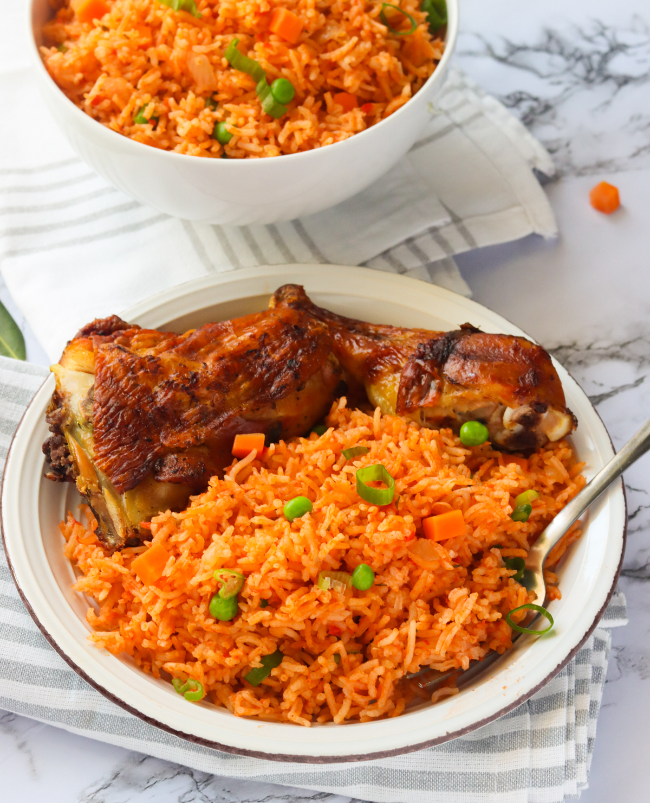

Party Jollof Rice

Description
Jollof rice! A nigerian national delicacy. Served at just about every joyous event, jollof rice has a place in the hearts of not just Nigerians, but West Africans in general.
Today in a few short steps, i'll show you how to prepare premium, party Jollof rice.
Ingredients.
- 2 cups of Washed rice
- 1 cup of Blended pepper
- 1 sachet of Tomato paste
- 2 Onions
- 1 tsp Curry
- 1 tsp Thyme
- 1 tbspnRosemary leaves
- 5 Bay leaves
- 1 tbsp Black pepper
- 5 Maggi cubes
- salt
- 1 tuber ofGinger
- 5 cloves ofGarlic
- 1 cup of Chicken stock
- 4 Boiled chicken
What to do with the chicken.
- 3 hours before you start cooking the jollof, wash the chicken with salt water
- Put all the chicken in a bowl
- Add 1bsp of curry, 1tbsp black pepper, 1tbsp of chilli powder, 4 maggi cubes, 1tbsp of dark soy sauce
- Mix everything together, cover the bowl with cling film and let it marinate for 3 hours
- after 3 hours mix 1tbsp of honey, ketchup and soy sauce
- apply to the pieces of chicken
- Bake in an oven for 30 minutes, turning over to intermittently to prevent burning
- Allow to cool and serve with your jollof rice
Steps for making jollof.
- Fry the onions with garlic
- Add the blended pepper, let that fry for 10 minutes
- Add the tomato paste, fry for 5 minutes
- Stir the ingredients often to prevent them from burning/li>
- Add the Curry, thyme, bay leaves, rosemary leaves and ginger
- crush the maggi cubes into the pot, Stir and fry for five minutes
- Add the chicken stock and stir
- let the mixture boil for 5 minutes
- pour the rice into the mixture and add 3 cups of water, along with a tbsp of salt
- boil until the water level is a centimeter above the rice
- reduce the heat to the barest minimum, cover the top of the pot with an aluminum foil and cover with pot cover
- let the water dry, stirring intermittently
- when the rice is soft and dry the meal is ready
- if the rice is still hard, add a cup of water and boil til it dries
- you now have red and delicious jollof rice